Day 5. 뇌는 20 W? 컴퓨터가 일하는 방식의 네 축
Phase 1 · 왜 뉴로모픽 컴퓨팅인가
이번 질문 '뇌는 20 W'라는 비교에는 무엇이 빠졌고, 클록·사건 구동·희소성·AER은 무엇이 다른가?
왜 배우나 '뇌처럼 효율적' 숫자가 W인지 J/작업인지, 같은 범위인지 되묻는다.
오늘의 장면 전력 W·처리율 → 작업당 에너지 = 전력 ÷ 처리율 → J/작업
입력 변화 → 문턱 넘을 때만 계산 → 발화 주소만 전송(AER)
오늘 반드시 20 W는 전력이지 효율이 아니다(작업당 에너지가 필요). 클록·사건 구동·AER는 서로 다른 것을 센다.
나중에 봐도 됨 Na⁺/K⁺ 통로 네 단계 · LIF 수식 세부 · Aluru 숫자 논쟁
넘어가는 기준 '오늘 반드시'를 내 말로 말할 수 있으면 충분합니다.
이후 쓰이는 곳 Day 7–8 LIF 회로·crossbar · Day 9 대기 전력과 희소 입력
지난 학습 복습
지난 학습 단위(Day 4 · 에너지와 시간은 어디로 가나: 메모리 벽과 Dennard scaling)의 핵심을 다른 예로 확인합니다. 고르는 즉시 맞았는지와 이유가 보입니다. 틀려도 아래 학습자료는 그대로 열려 있고, 틀린 문제에는 다시 볼 곳이 붙습니다.
사전 테스트 (선택)
사전 테스트 펼치기 · 배우기 전에 짐작해 보는 문제 (선택)
학습자료
Day 3–4에서는 보통 컴퓨터가 어디서 시간과 에너지를 잃는지를 봤습니다. 오늘 질문은 "그 벽을 넘기 위해 왜 하필 뇌를 보는가"입니다. 흔한 답은 "뇌는 20 W로 슈퍼컴퓨터 일을 한다"인데, 이 문장은 틀리지는 않았지만 아무것도 설명하지 않습니다. 오늘은 그 문장을 먼저 해부하고, 뇌의 원리를 하나씩 Day 3–4의 벽 하나하나와 조건부로 짝지어 봅니다.
그런데 "뇌의 원리"라는 말 안에는 컴퓨터 쪽 단어가 잔뜩 숨어 있습니다. 병렬, 동기, 클록, 사건 구동, 희소성, 신경망, 스파이크. 이 단어를 모른 채 리뷰를 읽으면 "뇌가 좋다"는 결론만 남고 왜가 비어 버립니다. 그래서 오늘은 여섯 개의 학습 구간으로 나누고, 둘째 구간을 통째로 기초 설명에 씁니다.
이 주제의 질문 순서 — 이번 Day 5에서는 구간 1–2만 읽습니다. 나머지는 Day 6에서 이어집니다(구간 번호는 원래 한 묶음이던 순서 그대로입니다).
- "뇌는 20 W"는 무엇을 말하고 무엇을 말하지 않나? (전력과 에너지, 작업과 처리율) → 구간 1
- 기초: 컴퓨터가 일하는 방식을 가르는 네 가지 축(디지털/아날로그, 동기/비동기, 직렬/병렬, 항시/사건 구동), 유닛 8개짜리 그림 하나로 보는 사건·희소성·활동률·AER, 그리고 신경망·스파이크·LIF와 co-location → 구간 2
- 리뷰들이 꼽는 "뇌의 원리"는 무엇이고 왜 목록이 서로 다른가? (Day 6에서)
- Co-location과 사건 구동은 어떤 비용을, 어떤 조건에서 줄이나? (Day 6에서)
- Analog와 시간 동역학은 어떤 비용을, 어떤 조건에서 줄이나? (Day 6에서)
- 가소성은 무엇을 줄이고 무엇을 요구하나? 그래서 "왜 하필 뇌인가"에 어떤 답을 쓸 수 있나? (Day 6에서)
학습 구간 1. "뇌는 20 W"의 비교 함정
상황. 논문 서론에 "뇌는 20 W로 슈퍼컴퓨터 일을 한다"는 문장이 있고, 내 device 논문도 "뇌처럼 에너지 효율적"이라고 쓰고 싶어 합니다. 이 문장을 그대로 인용해도 될까요?
왜 지금? "20 W"는 전력이고, 효율은 작업당 에너지입니다. 둘을 구분하지 않으면 뒤의 모든 비교(사건 구동, analog, 가소성)가 흔들립니다.
어디에 쓰이나? 논문의 efficiency 문장을 평가할 때, 내 device의 대기 이온 전류를 "쉬는 동안 쓰는 전력"으로 따질 때 씁니다.
끝나면 할 수 있는 것. "전력(W)"과 "작업당 에너지(J)"가 다른 양임을 손으로 계산해 보고, "뇌는 20 W"라는 문장에 무엇이 빠졌는지 세 가지로 말합니다.
왜 이 구분이 필요한가. 전구 두 개 켜는 전력으로 사람이 걷고 말하고 얼굴을 알아봅니다. 인상적인 문장입니다. 그런데 "전구 두 개"는 1초마다 쓰는 에너지, 즉 전력이고, "얼굴을 알아본다"는 작업입니다. 두 양은 단위가 다릅니다. 효율을 말하려면 "작업 하나에 에너지가 얼마나 드는가"를 세야 하고, 그러려면 전력을 "1초에 몇 작업을 끝내는가"(처리율)로 나눠야 합니다.
기초: 전력과 에너지, 그리고 작업당 에너지
한 줄 복습. 에너지 [J]는 일에 든 총량, 전력 [W = J/s]는 1초당 쓰는 에너지입니다. 처음 설명은 에너지와 전력에 있고, 오늘 새로 더하는 것은 아래의 '처리율'과 '작업당 에너지'입니다.
에너지·전력을 주전자 예로 다시 보기 (Day 1–2 복습)
- 에너지 [J, 줄]는 일을 하는 데 든 총량입니다. 주전자 물을 끓이는 데 100 kJ이 든다, 같은 식입니다.
- 전력 [W, 와트]은 1초에 쓰는 에너지입니다. 1 W = 1 J/s. 주전자가 1,000 W면 1초에 1,000 J을 씁니다. 100 kJ을 쓰려면 100초가 걸립니다.
- 처리율은 1초에 끝내는 작업의 개수입니다 [작업/s].
- 작업당 에너지(energy per task) = 전력 ÷ 처리율 [J/작업]. "효율"이라고 부를 수 있는 양은 이것입니다.
실험실 비유: 소스미터가 50 W를 쓴다는 것(전력)과, 측정 1점에 얼마의 에너지가 드는가(작업당 에너지)는 다릅니다. 1초에 100점을 재면 점당 0.5 J, 1점만 재면 점당 50 J입니다.
작은 예시. 그림 1의 가상 시스템 A는 20 W로 초당 10개의 작업을, B는 300 W로 초당 1,000개의 작업을 합니다.
- A의 작업당 에너지: 20 W ÷ 10 작업/s = 2 J/작업
- B의 작업당 에너지: 300 W ÷ 1,000 작업/s = 0.3 J/작업
전력이 15분의 1인 A가, 작업 하나당으로는 B보다 6.7배 더 씁니다. 느리기 때문입니다. 숫자는 설명용 가상값이고 뇌·컴퓨터의 실제 처리율이 아닙니다.
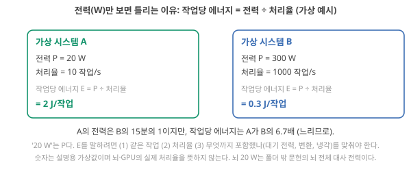
"뇌는 20 W"에 빠진 세 가지.
- 작업이 같지 않다. 뇌가 하는 일(걷기, 보기, 말하기)과 컴퓨터가 하는 일(숫자 곱셈 수십억 번)은 같은 단위로 셀 수 없습니다. "같은 작업"을 먼저 정의해야 작업당 에너지를 비교할 수 있습니다. 해석
- 무엇을 포함했는지 다르다. 20 W에는 쉬고 있을 때 드는 유지 비용(신경세포 막 안팎의 이온 농도 차를 되돌려 놓는 펌프. 아래 영상 다음의 '기초: 신경세포' 상자에서 설명합니다), 눈·귀 같은 감각 기관, 혈류·냉각이 모두 들어 있습니다. 컴퓨터 쪽 숫자는 메모리·냉각·전원 변환이 들어가기도 하고 빠지기도 합니다. 포함 범위를 맞추지 않은 비교는 비교가 아닙니다. 해석
- 그 숫자의 출처와 뜻을 따져야 한다. Zhu 리뷰는 "뇌는 약 20 W라는 놀라운 효율로 정보를 처리한다"고 쓰는데 Zhu 2025, p.2, 방금 본 대로 W는 전력의 단위이지 효율의 단위가 아닙니다. Roadmap은 다른 숫자를 씁니다. 성인 한 사람이 하루에 쓰는 에너지가 약 100 W의 연속 전력에 해당하고, 그것으로 인식·언어·운동·학습을 모두 한다고 적습니다. Roadmap 2026, p.8103 이것은 뇌가 아니라 몸 전체입니다. 뇌만의 약 20 W는 생리학 문헌에서 옵니다 폴더 밖 문헌으로 확인. 뇌는 몸무게의 약 2%이지만 몸이 쓰는 산소·열량의 약 20%를 쓰고 확인 (Raichle & Gusnard 2002, PNAS 99, 10237), 이를 와트로 적으면 약 20 W입니다 확인 (Balasubramanian 2021, PNAS 118, e2107022118). Roadmap의 몸 전체 약 100 W의 20%와도 맞습니다 Claude 계산. ★ 다만 이것은 쉬는 동안의 유지 비용까지 모두 포함한 뇌 전체의 대사(metabolism, 화학) 에너지 사용률이지, 계산 하나에 든 전기 에너지를 잰 값이 아닙니다.
기초: 신경세포 한 개 — 어떻게 생겼고, 쉬는 동안에도 왜 에너지를 쓰나
무엇을 하려고 필요한가. 바로 아래 Aluru의 세 숫자(스파이크, 시냅스 저장, 휴지 유지)와 기초 구간의 스파이크·시냅스·LIF는 모두 신경세포 한 개의 부품 이야기입니다. 화학 쪽 말로 하면 "막을 사이에 둔 두 이온 용액, 그리고 막에 박힌 단백질 통로와 펌프"의 이야기입니다. 그 부품을 먼저 봐 둡니다. 아래 숫자는 교과서의 대표값이고 세포 종류마다 다릅니다.
무엇을 볼지. 그림 2(a)는 세포 한 개의 모양, (b)는 막 안팎, (c)는 다음 세포와 만나는 곳입니다. 그림을 먼저 훑고 아래 세 문단을 (a) → (b) 순서로 따라가세요((c)는 뒤의 '신경망과 스파이크'에서).
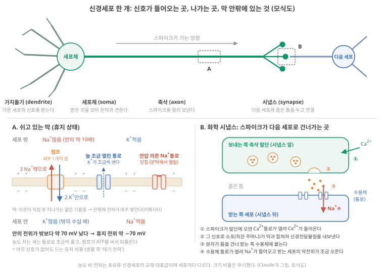
어떻게 생겼나 (그림 2(a)). 신경세포(neuron, 뉴런)는 세 부분으로 나눠 볼 수 있습니다. 나뭇가지처럼 갈라진 가지돌기(dendrite)가 다른 세포의 신호를 받고, 세포체(soma)가 받은 것을 모으며, 가늘고 긴 축삭(axon)이 세포체에서 만든 신호를 멀리 보냅니다. ★ 축삭 끝은 다음 세포와 아주 좁은 틈을 두고 마주 보는데, 이 연결 부위가 시냅스(synapse)입니다. 신호를 보내는 쪽을 시냅스 앞(presynaptic), 받는 쪽을 시냅스 뒤(postsynaptic) 세포라고 부릅니다. 대뇌 피질의 신경세포 하나는 흔히 10⁴개가 넘는 세포로 신호를 보냅니다. 확인 (Gerstner 외 2014, Neuronal Dynamics, 1.1절)
막 안팎에는 무엇이 있나 (그림 2(b)). 세포는 이온이 직접 통과하지 못하는 얇은 기름 성분의 막(지질 이중층, lipid bilayer)으로 싸여 있습니다. 막 바깥에는 나트륨 이온(Na⁺)이 안쪽의 약 10배 있고, 안쪽에는 칼륨 이온(K⁺)이 바깥보다 훨씬 많습니다(강의에서는 흔히 안 약 140 mM, 밖 약 5 mM으로 씁니다). 그리고 쉬는 동안 세포 안의 전위는 바깥보다 약 70 mV 낮습니다. ★ 막 안의 전위에서 밖의 전위를 뺀 값을 membrane potential라 하고, 쉬는 동안의 값 약 −70 mV를 휴지 전위(resting potential)라 합니다. 확인 (OpenStax Anatomy and Physiology 2e, 12.4절: Na⁺ 약 10배, −70 mV) 강의 자료로 확인
쉬는 동안에도 왜 에너지를 쓰나. 막에는 이온이 지나가는 단백질 통로(ion channel)가 박혀 있고, 그중 늘 조금 열려 있는 통로로 이온이 농도가 낮은 쪽으로 조금씩 샙니다(주로 K⁺가 밖으로). 그대로 두면 농도 차가 서서히 줄어듭니다. ★ 그래서 나트륨–칼륨 펌프(Na⁺/K⁺ pump)라는 막 단백질이 세포의 화학 에너지인 ATP를 써서, 한 번 돌 때마다 Na⁺ 3개를 밖으로, K⁺ 2개를 안으로 퍼 나릅니다. 확인 (OpenStax Biology 2e, 5.3절) 농도가 낮은 쪽에서 높은 쪽으로 미는 일이라 에너지가 듭니다. 아래로 흘러내린 물을 펌프로 다시 물탱크에 올려 두는 것과 같습니다. 이 비유는 "농도 차 = 쌓아 둔 에너지, 새는 만큼 다시 채워야 한다"까지 맞고, 이온은 전하를 띠어서 농도 차뿐 아니라 membrane potential에도 밀리고 끌린다는 점에서 깨집니다.
연구와의 연결. 이 펌프 일이 위 2번에서 말한 "쉬고 있을 때 드는 유지 비용"이고, 'co-location과 사건 구동' 구간 식에서 대기 전력(standby power)에 해당하는 생물 쪽 항목입니다. 사람 대뇌 피질의 에너지 예산을 어림한 Lennie는 피질이 쓰는 에너지의 약 28%가 신경세포의 휴지 전위 유지에 든다고 추정했습니다. 확인 (Lennie 2003, Curr. Biol. 13, 493, 모형 추정치) 동시에 이 농도 차는 기초 구간의 스파이크가 순간적으로 꺼내 쓰는 "충전된 배터리"이기도 합니다. 이온트로닉스에서 염 농도 차로 전압을 얻는 것과 같은 원리(이온 농도 차 → 막을 사이에 둔 전압)입니다. 해석
그렇다면 뇌 쪽에서 "작업당" 단위로 적힌 숫자는 무엇이 있나? Aluru 리뷰가 세 개를 줍니다. 신경세포가 짧은 전기 펄스(스파이크, 기초 구간에서 설명)로 정보 1 bit를 부호화·전송하는 데 약 1–100 pJ, 그것을 화학 시냅스(앞 그림의 (c))에 저장하는 데(연결 세기를 바꿔 정보를 남기는 일, '가소성' 구간) 약 2–6 fJ, 이온 농도 기울기와 휴지 전위를 유지하는 데(위 기초 상자의 펌프 일) 약 20 pW. Aluru 2026, p.592 셋 다 단위가 다릅니다(J/bit, J/저장, W). 그리고 셋째 숫자가 무엇 하나(세포 하나? 뇌 전체?)를 유지하는 값인지는 그 문장에 적혀 있지 않습니다. 뇌 전체가 20 W라면 20 pW는 뇌 전체의 값일 수 없으니, 이 숫자를 쓸 때는 "무엇 하나당"을 원 문헌에서 먼저 확인해야 합니다. 해석 Day 3–4에서 본 컴퓨터 쪽 숫자(덧셈 한 번 약 0.1 pJ, Horowitz 2014의 45 nm 값 확인 원문 Fig. 1.1.9 대조)와 나란히 놓으려면 "bit 하나를 옮기는 일"과 "덧셈 한 번"이 같은 작업인지부터 물어야 합니다. 같지 않습니다. 오늘 가져갈 것은 비교 결과가 아니라 비교하려면 작업·포함 범위·단위를 맞춰야 한다는 절차입니다. Day 1–2에서 "6.7 fJ/spike vs 수십 pJ/spike"를 같은 기준의 숫자가 아니라고 정리한 것과 같은 연습입니다.
"뇌는 20 W로 슈퍼컴퓨터 일을 하니 뇌를 베끼면 효율이 수천 배 오른다" — 전력(P)과 작업당 에너지(E)를 섞었고, 작업이 같지 않으며, 포함 범위도 다릅니다. 그리고 "베낀다"가 무엇을 베끼는지(device? 구조? 신호 방식?) 말하지 않습니다. 이 문장을 내 답에 쓰려면 "어떤 작업에서, 무엇을 포함해, 어느 원리가" 세 칸을 채워야 합니다. 오늘 뒤의 네 구간(원리 목록·co-location·analog·가소성)이 그 칸입니다.
- 전력과 에너지 (복습)
- 전력 \(P\) [W]는 1초당 에너지, 에너지 \(E\) [J]는 총량. 효율은 작업당 에너지 \(E = P /\) 처리율. 기초 상자
- 대기 전력 (standby / static power)
- 아무 일도 하지 않을 때 쓰는 전력. 생물은 이온 기울기 유지(약 20 pW Aluru 2026, p.592), 컴퓨터는 꺼진 스위치로 새는 전류(leak). 'co-location과 사건 구동' 구간의 핵심 변수.
내가 쓴 device 논문(또는 읽은 논문)의 "에너지 효율" 문장을 하나 떠올려 보세요. 그 숫자는 P인가요 E인가요? 작업은 무엇이고, 측정 회로·전원은 포함됐나요? 세 질문 중 답할 수 없는 것을 적어 두세요.
생각 정리 보기
해석 판단 순서입니다.
- 단위. W이면 \(P\)(전력), J/작업이면 \(E\)입니다. W만 있으면 효율이 아닙니다(처리율이 필요).
- 작업. 무엇 한 번(분류 1회, spike 1회, 측정 1점)을 작업 하나로 셌는지 봅니다.
- 포함 범위. device만인지, 측정 회로·전원·ADC까지인지 봅니다.
예: "device 하나가 spike당 fJ"라는 문장은 \(E\)이지만 작업이 spike 1회이고 측정 회로가 빠져 있어서, 시스템의 작업당 에너지와는 바로 비교할 수 없습니다. 답할 수 없는 항목은 '아직 모르는 것'에 적습니다.
- 정의: 효율은 작업당 에너지 \(E = P /\) 처리율. "20 W"는 \(P\)다.
- 왜 함정인가: 작업이 같지 않고, 포함 범위가 다르다. 뇌 20 W는 폴더 밖 문헌으로 확인되는 뇌 전체의 대사 전력이다(몸 산소·열량의 약 20%) 확인 (Raichle & Gusnard 2002; Balasubramanian 2021). Zhu 2025는 W를 효율이라 적고 Zhu 2025, p.2, Roadmap은 몸 전체 100 W를 적는다 Roadmap 2026, p.8103.
- 성립 조건: 같은 작업, 같은 포함 범위, 같은 단위에서만 \(E\) 비교가 된다.
- 쉬는 뇌도 에너지를 쓰는 이유: 늘 열린 통로로 이온이 새어 Na⁺·K⁺ 농도 차가 줄고, 펌프가 ATP로 되돌린다(한 번에 Na⁺ 3개 밖, K⁺ 2개 안). 이것이 생물 쪽 대기 전력이다.
- 쉬어 가기: 여기까지가 "숫자 읽는 법"이다. 다음 구간은 단어 공부다.
학습 구간 2. 기초: 컴퓨터가 일하는 방식을 가르는 네 가지 축, 그리고 유닛·사건·스파이크
상황. 리뷰는 뇌를 "병렬, 비동기, 아날로그, 사건 구동, 희소"라고 한 줄로 묘사하고, 논문은 내 device가 그중 어느 것을 한다고 쓰기도 합니다. 다섯 단어가 각각 무엇을 세거나 보낸다는 말일까요?
왜 지금? 다섯 단어는 서로 다른 질문에 대한 답입니다. 어휘를 먼저 분리해 두어야 뒤의 "뇌의 원리" 목록과 그 조건을 읽을 수 있습니다.
어디에 쓰이나? 리뷰·논문 서론의 "뇌의 원리" 문장을 읽을 때, 내 device가 어느 축을 주장하는지 정할 때 씁니다.
끝나면 할 수 있는 것. 디지털/아날로그, 동기/비동기(클록), 직렬/병렬, 항시/사건 구동이 서로 다른 네 축임을 압니다.
또 유닛 8개짜리 그림 하나를 따라가며 사건·희소 분산 부호화·활동률·AER가 각각 무엇을 세거나 보내는지, 유닛 하나 안에서 스파이크와 LIF가 무엇을 하는지 설명합니다. 리뷰의 "뇌의 원리" 문장을 읽을 수 있는 어휘를 갖추는 구간입니다.
리뷰들은 뇌를 "병렬, 비동기, 아날로그, 사건 구동, 희소"라고 묘사합니다. 다섯 단어가 한 덩어리로 들리지만 실제로는 서로 다른 질문에 대한 답입니다. 이 구간은 길어서 네 묶음으로 나눴습니다. 묶음 하나씩 읽고 쉬어도 됩니다.
- 2-1 값·박자·동시 처리: Day 1–2에서 본 내용을 오늘 쓸 만큼 다시.
- 2-2 유닛 8개짜리 그림 하나를 네 번 키우기: 사건 구동 → 희소 분산 부호화와 활동률 → AER. 이 묶음이 가장 길므로, 사건 구동까지 읽고 네 축을 한 장에 모은 그림 뒤에서 한 번 쉬어도 됩니다.
- 2-3 유닛 하나 안에서 일어나는 일: 신경망, 스파이크, LIF.
- 2-4 기억하는 자리에서 계산하기: co-location.
2-1. 값·박자·동시 처리
기초 1: 디지털과 아날로그 — 값을 "어떻게 표현하는가"
한 줄 복습. 디지털은 값을 높음/낮음(1·0) 비트의 묶음으로, 아날로그는 전압 같은 연속량의 크기 자체로 나타냅니다. 디지털은 잡음에 강하고, 아날로그는 잡음이 곧 오차입니다. 처음 설명은 비트, 디지털 vs 아날로그에 있고, 오늘 새로 더하는 것은 아래의 '양자화 오차'와 이온 device와의 연결입니다. 바로 아래 세 문단(왜·어디에·무슨 일이)은 Day 1–2의 설명을 오늘 쓸 만큼 다시 적은 것인데, 'analog와 시간 동역학' 구간의 잡음 논의가 여기에 기대므로 접지 않았습니다.
왜 이 구분이 생겼나. 전기로 숫자를 나타내는 방법은 두 가지입니다. 전압의 크기 자체를 숫자로 쓰거나(2.37 V = 2.37), 전압을 높음/낮음 두 가지로만 보고 여러 개를 묶어 숫자를 쓰거나(높음 낮음 높음 = 101 = 5).
어디에 있나. 수은 온도계는 눈금 위 수은 높이가 곧 온도입니다. 연속적인 양 하나가 값을 직접 나타냅니다. 이것이 아날로그 표현입니다. 디지털 온도계는 "36.5"라는 숫자를 보여 주는데, 그 숫자는 속에서 0과 1의 묶음으로 저장됩니다. 이것이 디지털 표현입니다.
입력이 들어오면 무슨 일이. 아날로그 회로에 잡음(원치 않는 작은 전압 흔들림)이 0.01 V 섞이면 값이 2.37에서 2.38로 바뀝니다. 잡음이 그대로 오차가 됩니다. 디지털 회로에서는 0.9 V가 0.91 V가 되어도 여전히 "높음"이라 값이 안 바뀝니다. 잡음이 문턱(예: 0.5 V)을 넘을 만큼 커져야 비로소 틀립니다.
작은 숫자로. 0–3 V를 8단계로 나누어 디지털로 쓰면 3 bit(2³ = 8)입니다. 한 단계 폭은 3/8 ≈ 0.375 V이므로, 이보다 작은 차이는 표현되지 않습니다(이것을 양자화 오차라고 부르고 Day 7–8에서 다시 봅니다). 아날로그는 단계가 없는 대신 잡음만큼의 오차를 늘 갖습니다.
이름. 디지털(digital, 자릿수로) / 아날로그(analog, 닮은꼴로). 디지털에서 0 또는 1 한 자리를 비트(bit)라고 부릅니다.
뉴로모픽·이온 device와의 연결. 이온 device의 conductance나 계면 전하량은 연속량, 즉 아날로그입니다. "아날로그 weight device"라는 말은 저항값 하나가 숫자 하나를 직접 나타낸다는 뜻입니다. 그래서 Day 7–8의 모든 오차 논의(잡음, 편차, 변환)는 이 표현 방식에서 나옵니다. 주의: 이온 device가 아날로그라는 것은 표현의 이야기이고, 전자 device와 같은 원리로 동작한다는 뜻은 아닙니다. 이온은 질량이 있고 느리며 농도와 화학에 묶여 있습니다.
기초 2: 동기와 비동기, 그리고 클록 — "언제 움직이는가"
한 줄 복습. 클록은 회로 전체가 맞추는 공통 박자(1초에 수십억 번, GHz)이고, 그 박자에 맞춰 움직이면 동기 방식입니다. 처음 설명은 클록에 있습니다. 오늘은 박자 없이 움직이는 비동기 쪽을 더 자세히 봅니다. 아래 두 문단은 동기 방식의 뜻을 다시 적은 것이고, 그 뒤의 비동기 설명이 이것을 기준으로 삼으므로 펼쳐 둡니다.
왜 이 구분이 생겼나. 회로 안의 수많은 부품이 각자 결과를 내는데, 어떤 결과가 "완성된 값"인지 언제 읽어야 하는지 정해야 합니다. 두 방법이 있습니다. 모두가 공통 박자에 맞춰 한 걸음씩 가거나, 각자 준비되면 다음으로 넘기거나.
어디에 있나. 보통 컴퓨터 안에는 클록(clock)이라는 아주 규칙적인 전기 박자 신호가 있습니다. 메트로놈입니다. 1초에 수십억 번(기가헤르츠, GHz) 똑딱이고, 모든 부품이 그 박자에 맞춰 값을 넘깁니다. 이것이 동기(synchronous) 방식입니다. 공장 컨베이어 벨트에서 벨트가 한 칸 움직일 때 모든 작업자가 동시에 자기 일을 한 번 하는 것과 같습니다(이 비유는 '공통 박자'까지만 맞습니다. 실제 회로에서는 박자마다 모든 부분이 같은 양의 일을 하지는 않습니다. 아래 '입력이 들어오면'에서).
비동기(asynchronous) 방식은 우체국에 가깝습니다. 아래 그림을 먼저 보면 순서가 잡힙니다. 편지가 도착하면 그때 처리하고, 처리가 끝나면 다음 창구로 넘기며, 편지가 없으면 아무도 움직이지 않습니다. 공통 박자가 없는 대신, 이웃한 두 단계가 전선 두 가닥으로 "준비됐다/받았다"를 주고받습니다. 이것을 악수(handshake)라 합니다. 흔한 방식(4단계 악수)을 순서대로 쓰면 ① 보내는 쪽이 데이터 선에 값을 올리고 '요청(request)' 선을 높이고 ② 받는 쪽이 값을 붙잡은 뒤 '확인(acknowledge)' 선을 높이고 ③ 보내는 쪽이 요청 선을 내리고 ④ 받는 쪽이 확인 선을 내리면, 다음 값을 보낼 수 있습니다. ★ 클록의 가장자리 대신 이 신호 왕복이 "값이 다 됐다"를 알려 주는 셈입니다. 강의 자료로 확인
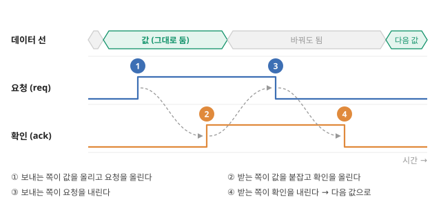
입력이 들어오면 무슨 일이. 동기 회로: 입력이 와도 다음 똑딱까지 기다렸다가 처리하고, 입력이 없어도 똑딱마다 클록 신호 자체가 칩 전체에 퍼져 나갑니다. 클록 선은 박자마다 반드시 0↔︎1을 오가므로, 거기 매달린 배선과 레지스터(박자에 맞춰 값을 붙잡는 저장 칸)의 capacitance(전하를 담는 그릇의 크기, capacitor)를 매번 충방전합니다. 지난 학습의 \(P \approx \alpha C V^2 f\)에서 활동률(한 박자에 실제로 0↔︎1이 바뀌는 비율)이 늘 1인 부분이라, 이 배분에도 전력이 듭니다. ★ 다만 박자마다 회로 전체가 똑같이 일하는 것은 아닙니다. 값이 그대로인 부분은 스위치가 바뀌지 않아 그만큼 에너지를 덜 쓰고(활동률이 낮음), 쓰지 않는 부분에 박자 공급을 끊어 두는 설계도 있습니다(뒤의 사건 구동에서 다시). 비동기 회로: 앞 단계가 '준비됐다'는 신호를 보내면 그때 처리하고, 보낼 값이 없으면 그 부분은 조용합니다. 이것은 '부품끼리 언제 값을 주고받나'의 방식이고, 무엇을 처리할 '사건'으로 볼지는 뒤의 사건 구동에서 다루는 다른 질문입니다.
작은 숫자로. 클록이 1 GHz면 한 박자는 1 ns(10⁻⁹ s)입니다. 어떤 계산이 1,000 박자 걸리면 1 µs입니다. 클록을 2 GHz로 올리면 0.5 µs. 그래서 Day 3–4에서 본 "클록을 더 못 올린다"가 곧 "더 빨라지지 못한다"였습니다.
이름. 동기/비동기(synchronous/asynchronous), 클록(clock), 클록 주파수 \(f\) [Hz].
연결. 디지털이면서 비동기인 칩이 있습니다. Day 1–2에서 본 Intel의 Loihi 2가 그 예이고, Kudithipudi 리뷰는 여러 뉴로모픽 칩이 사건 기반 비동기 통신을 쓴다고 정리합니다. Kudithipudi 2025, p.803 즉 "디지털 = 클록에 맞춰 움직임"이 아닙니다. 값의 표현(디지털/아날로그)과 동작 방식(동기/비동기)은 다른 축입니다.
기초 3: 직렬과 병렬 — "한 번에 몇 개를 하는가"
왜 이 구분이 생겼나. 일이 100개 있을 때 계산대 하나로 하나씩 처리하면(직렬) 100단위 시간이, 계산대 10개로 나눠 하면(병렬) 10단위 시간이 듭니다. 계산기를 빠르게 만들지 못하면(Day 3–4의 클록 정체) 계산기 수를 늘리는 것이 남은 길입니다.
어디에 있나. 보통 컴퓨터의 두뇌(CPU, 중앙처리장치: 프로그램의 명령을 하나씩 읽어 계산하는 부품, CPU와 GPU)는 요즘 코어라는 계산기를 몇 개에서 수십 개 가집니다. 그래픽 처리 장치(GPU)는 원래 화면의 수백만 픽셀을 동시에 칠하기 위해 만든 칩이라 작은 계산기를 수천 개 가지며, 신경망 계산에 널리 쓰입니다(CPU와는 연산기 수뿐 아니라 지휘 방식과 메모리 구성도 다릅니다. CPU와 GPU). 뇌는 신경세포 약 860억 개(8.6×10¹⁰, 자릿수로 약 10¹¹)가 각자 동시에 움직입니다 확인 (Azevedo 외 2009, J. Comp. Neurol. 513, 532; 성인 남성 4명의 뇌를 센 값).
입력이 들어오면 무슨 일이. 병렬 처리가 효과를 내려면 일이 나눌 수 있는 것이어야 합니다. 100명의 요리사가 라면 하나를 100배 빨리 끓이지는 못합니다. 신경망의 "입력 × weight를 더하기"는 입력마다 독립이라 나누기 쉬운 일입니다(뒤의 '신경망과 스파이크'에서 자세히).
작은 숫자로. 신경세포 하나가 1초에 스파이크(짧은 전압 펄스)를 10번 낸다고(10 Hz) 가정하고, 그런 세포가 자릿수로 10¹¹개면 1초에 약 10¹²번의 "작업"이 됩니다(자릿수 어림) Claude의 어림. 실제 평균은 이보다 훨씬 낮을 수 있습니다. Lennie는 사람 대뇌 피질의 에너지 예산으로부터 신경세포 하나의 평균 발화율을 초당 약 0.16번으로 추정했고 확인 (Lennie 2003, Curr. Biol. 13, 493), 이 값을 860억 개 전체에 넓혀 쓰면 초당 약 1.4×10¹⁰번입니다(피질의 값을 뇌 전체에 적용한 어림) Claude 계산. 또 스파이크 하나는 흔히 10⁴개가 넘는 세포에 닿으므로(기초: 신경세포) 시냅스에 도착하는 사건으로 세면 수가 더 커집니다. 무엇을 "작업" 하나로 세느냐가 다시 '뇌는 20 W' 구간의 문제입니다. ★ 어느 쪽이든 하나하나는 느린 것을 수로 메우는 구조이고, 이것이 '뇌는 20 W' 구간의 "처리율"을 뇌가 확보하는 방법입니다. 해석
이름. 직렬/병렬(serial/parallel), 병렬성(parallelism).
연결. 병렬은 뇌와 GPU가 공통으로 가진 성질입니다. 그러므로 "병렬이니까 뇌를 닮았다"는 말은 성립하지 않습니다. Day 1–2의 다섯 축에서 병렬이 축으로 들어가지 않은 이유입니다. Roadmap은 병렬성을 "같은 부품을 여러 개 두는 공간적 병렬"과 "한 부품이 여러 신호를 동시에 다루는 내재적 병렬"로 나눕니다. Roadmap 2026, p.8126–8127
2-2. 유닛 8개로 보는 사건·희소성·활동률·주소
이 묶음은 그림 하나를 네 번 키웁니다. 등장하는 것은 번호 0–7이 붙은 유닛 8개뿐이고, 끝까지 같은 8개를 씁니다. 먼저 3번 유닛 하나의 시간선을 보고(사건 구동), 다음에 8개를 한꺼번에 보고(희소 분산 부호화), 8개 × 10초를 세고(활동률), 마지막으로 그 발화를 다른 칩에 보냅니다(AER).
기초 4: 클록과 사건 구동 — "무엇이 계산을 시작시키는가"
먼저, 오늘 '하나'로 세는 것: 유닛(unit). 이 Day에서 유닛은 입력을 받아 자기 상태(숫자 하나)를 갖고 있다가, 조건이 맞으면 출력 신호를 하나 내보내는 계산 단위 한 개입니다. '뇌는 20 W' 구간에서 본 신경세포 한 개를 계산 규칙만 남겨 단순화한 '모형 뉴런' 한 개라고 보면 됩니다. 칩에서는 그 일을 하는 회로 한 덩어리, 프로그램에서는 상태 변수 하나와 그 update 규칙입니다. 트랜지스터 하나나 연결(시냅스) 하나가 아닙니다. 유닛이 출력 신호를 내는 것을 발화(firing)라 하고, 생물 뉴런에서는 그 신호가 스파이크('뇌는 20 W' 구간에서 말한 짧은 전기 펄스, 모양과 원리는 뒤의 '신경망과 스파이크'에서)입니다. 유닛 안에서 정확히 무슨 계산을 하는지도 거기서 봅니다. ★ 지금은 "입력을 받는다 → 상태가 바뀐다 → 조건이 맞으면 발화한다"만 있으면 됩니다.
예제 장면. 화학 센서 8개를 늘어놓은 작은 배열이 있고, 센서마다 유닛이 하나씩 붙어 있습니다(유닛 0–7). 센서 k의 신호가 유닛 k의 입력입니다. 숫자와 반응 방식은 설명을 위해 정한 예시입니다. 우선 3번 유닛 하나만 10초 동안 봅니다. 3번 센서의 신호는 7.3초에 어떤 가스가 들어오면서 올라가고 9.2초에 가스가 빠지며 내려갑니다. 나머지 시간에는 변하지 않습니다.
무엇을 볼지. 그림 4는 같은 10초를 두 방식으로 처리합니다. (a)는 1초마다 박자(클록)를 쳐서 센서 값을 읽고 다시 계산하는 방식, (b)는 값이 정해 둔 폭 이상 바뀌었을 때만 알리는 방식입니다. 두 패널에서 ① 계산이 몇 번 일어났나 ② 값이 그대로인 동안에도 계속 돌아가는 것은 무엇인가 ③ 변화가 일어난 뒤 알아차리기까지 얼마나 걸렸나를 비교하세요.
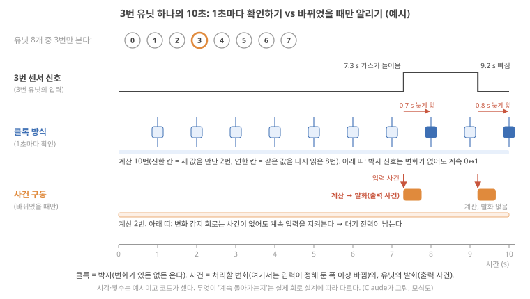
그림을 따라가며.
- 클록 방식(그림 4(a)). 박자는 1, 2, …, 10초에 10번 옵니다. 박자마다 회로가 센서 값을 읽고 유닛 상태를 다시 계산하므로 계산도 10번입니다. 그중 새 값을 만난 것은 8초(7.3초의 변화)와 10초(9.2초의 변화) 두 번뿐이고, 나머지 8번은 같은 값을 다시 읽었습니다. 변화를 알아차리기까지 0.7초, 0.8초가 걸렸습니다(다음 박자까지 기다리므로 이 예에서는 최대 1초). 값이 그대로인 동안에도 박자 신호 자체는 계속 0↔︎1을 오갑니다.
- 사건 구동(그림 4(b)). 변화 감지 회로가 입력을 지켜보다가 7.3초와 9.2초에 "바뀌었다"는 신호를 냅니다. 이 신호 하나하나가 사건(event)입니다. 사건이 올 때만 3번 유닛이 계산하므로 계산은 2번입니다. 7.3초의 사건에서는 상태가 문턱을 넘어 3번 유닛이 발화하고(출력 사건), 9.2초의 사건에서는 계산은 했지만 발화하지 않습니다. ★ 사건이 없는 동안 계산은 없지만, 감지 회로는 계속 입력을 지켜봐야 하므로 그 회로가 쓰는 전력(대기 전력, standby power)은 남습니다.
클록과 사건, 두 말의 차이.
- 클록(clock)은 박자입니다. 일정한 간격으로 "지금 값을 넘겨라"를 알리는 신호이고, 처리할 변화가 있든 없든 옵니다.
- 사건(event)은 처리할 변화나 발생 그 자체입니다. 이 예에서는 "입력이 정해 둔 폭(문턱, threshold) 이상 바뀌었다"가 입력 사건이고, "유닛이 발화했다"가 출력 사건입니다.
- 사건 구동(event-driven)은 사건이 생길 때만 그 사건과 관련된 부분이 계산하고, 결과도 사건의 형태로 다음에 넘기는 방식입니다. 반대쪽은 입력이 없어도 박자마다 모두를 다시 평가하는 항시 동작(always-on)입니다.
Roadmap의 정의를 옮기면, 사건 구동은 중앙 클록이 아니라 개별 사건이 동작을 촉발하는 패러다임이고, 유닛은 문턱을 넘는 입력이 올 때까지 대부분 비활성이며, 이 방식은 "전역 클록 동기화의 상당한 전력 오버헤드를 없애고" 시간·공간에서 활성인 사건에만 계산을 제한하며, "비활성 동안 초저전력을 유지한다"고 씁니다. Roadmap 2026, p.8127
입력이 들어오면 무슨 일이. 그림 4(b)의 한 바퀴를 단계로 쪼개면 다음과 같습니다.
1. 대기. 입력선을 지켜보기만 한다. 이때 쓰는 전력이 '대기 전력'이다. 이 값이 0이 아니라는 점이 뒤의 핵심이다.
2. 사건 판정. 입력이 문턱을 넘었나? 넘지 않았으면 1로 돌아간다. 아무 계산도 하지 않는다.
3. 국소 계산. 넘었으면 그 유닛만 자기 계산(예: 들어온 입력을 자기 상태에 더하기. 입력마다 다른 무게를 곱하는 'weight'는 뒤에서 설명)을 한다. 이웃 유닛은 상관없다.
4. 출력 사건. 계산 결과가 또 문턱을 넘으면 다음 유닛들에게 '사건'을 보낸다. 넘지 않으면 보내지 않고 1로 돌아간다.
작은 계산. 그림 4의 10초 동안 계산 횟수는 클록 방식 10번, 사건 구동 2번입니다. 계산 횟수는 5분의 1이 됐습니다. ★ 그러나 전력이 5분의 1이 된다는 보장은 없습니다. 감지 회로의 대기 전력이 시간 내내 나가고, 사건 하나를 다루는 데 감지·전달 비용이 더 붙을 수 있기 때문입니다(뒤의 '사건 구동과 희소성' 절에서 식으로). 크게 키우면: 유닛 100만 개에 1초당 사건이 유닛마다 평균 1번 온다고 합시다(사건률 1 Hz). 항시 동작이 1 MHz 박자면 1초에 100만 × 100만 = 10¹²번 계산하지만, 사건 구동이면 100만 × 1 = 10⁶번만 계산합니다. 비율은 10⁶. 그래도 대기 전력은 사건 수와 무관하게 나가므로 전체 전력의 비율은 이보다 훨씬 작습니다. 뒤의 '사건 구동과 희소성' 절에서 대기 전력까지 넣어 계산합니다.
자주 섞이는 것 두 가지.
- 동기/비동기와 사건 구동은 다른 질문입니다. 동기/비동기는 "부품들이 언제 값을 주고받나(공통 박자 vs 준비 신호)"이고, 사건 구동은 "무엇이 계산을 시작시키나(박자 vs 처리할 변화)"입니다. 박자로 움직이는 동기식 디지털 칩도 박자마다 '처리할 사건이 쌓여 있나'만 보고 없으면 계산을 건너뛰도록 만들 수 있고, 비동기 회로도 일정 간격으로 값을 읽게 만들 수 있습니다. 해석 아래 그림 5가 세 방식을 같은 시간축에 놓고, 그림 6이 네 축을 한 장에 모읍니다.
- "클록마다 모든 회로가 똑같이 일한다"는 틀린 그림입니다. 동기 회로에서도 값이 그대로인 부분은 스위치가 바뀌지 않아 그만큼 에너지를 덜 쓰고(Day 3–4의 활동률), 쓰지 않는 블록에는 박자 공급을 끊는 설계(클록 게이팅, clock gating)도 흔히 씁니다. 해석 원문 미대조 거꾸로 사건 구동도 공짜가 아닙니다. 기다리며 감시하는 비용, 사건을 감지하는 비용, 사건을 다른 유닛에 보내는 통신 비용(뒤의 AER)이 남습니다. ★ 그러니 둘의 차이는 "일하느냐 마느냐"가 아니라 "일을 줄이는 방법과 남는 비용의 종류"입니다(뒤의 '사건 구동과 희소성' 절에서 식으로).
연결. 사건 구동은 값의 표현(디지털/아날로그)·동작 방식(동기/비동기)과 독립입니다. 디지털 사건 구동 칩(Loihi 2)도, 아날로그 사건 구동 회로(Day 1–2의 silicon retina)도 있습니다. 이온 device에서 "사건"은 예를 들어 압력이 문턱을 넘어 전위가 튀는 순간일 수 있습니다. '뇌의 원리 목록' 구간에서 Roadmap의 원문 그림(Figure 9 c)으로 이 두 방식을 다시 봅니다.
무엇을 볼지. 그림 5는 앞의 1초 박자 예와 다른 예시로, 동기·비동기·사건 구동 세 방식을 같은 10초에 나란히 놓습니다. (b) 비동기가 '박자가 없다'는 점에서는 사건 구동과 닮았지만, 무엇이 일을 시작시키는지(앞 단계의 '끝났다' 신호 vs 입력 사건)는 다르다는 점을 보세요.
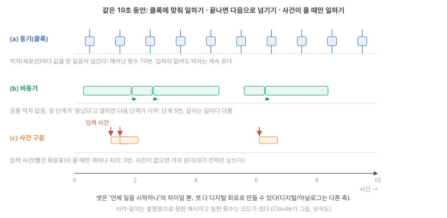
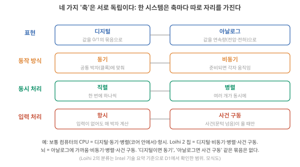
기초 5: 희소성, 희소 분산 부호화, 활동률 — 8개 중 몇 개가 언제 켜지나
왜 필요한가. 앞에서 본 사건 구동은 사건이 드물 때 일을 줄입니다. "얼마나 드문가"를 말하려면 같은 장면을 3번 하나에서 8개 유닛 전체로 넓혀야 합니다.
무엇을 볼지. 그림 7(a)는 같은 배열에 두 가스가 각각 들어왔을 때 어느 유닛이 발화하는지 보여 줍니다. 패턴 A(가스 A)에서는 1번과 5번, 패턴 B(가스 B)에서는 3번과 6번입니다. 몇 개가 켜졌는지, 그리고 A와 B를 무엇으로 구별하는지 보세요. (b)(c) 두 칸은 희소성의 두 종류입니다.
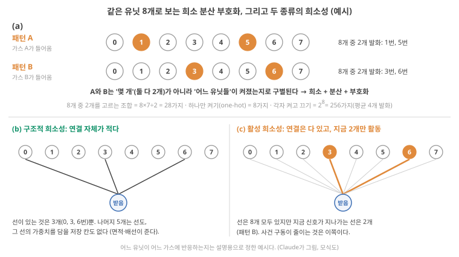
그림을 따라가며.
- 두 패턴 모두 8개 중 2개만 발화합니다. 대부분이 조용하고 적은 일부만 활동하는 것이 희소(sparse)입니다. 이 작은 예에서는 25%이고, 뇌나 큰 칩에서 한 순간에 활동하는 비율은 보통 이보다 훨씬 작습니다. 해석
- A와 B는 '몇 개가 켜졌나'(둘 다 2개)로는 구별되지 않고 '어느 유닛들이 켜졌나'로 구별됩니다. 그리고 유닛 하나만 보고 대상을 단정할 수도 없습니다. 예를 들어 6번은 가스 B에서 켜지지만, 다른 가스에서 0번과 함께 켜지도록 정할 수도 있습니다. 정보가 한 유닛이 아니라 여러 유닛의 조합에 나뉘어 담기는 것이 분산(distributed)입니다.
- 어떤 조합이 어떤 대상을 뜻하도록 정해 두고 그 패턴으로 정보를 나타내는 것이 부호화(coding)입니다.
셋을 합친 희소 분산 부호화(sparse distributed coding)는 적은 수의 유닛만 켜지되, 어느 유닛들이 켜졌는지의 조합으로 정보를 나타내는 방식입니다. Kudithipudi 리뷰가 뉴로모픽의 둘째 이점으로 든 "시간 정보를 담은 스파이크·사건의 희소 분산 부호화"가 이것이고 Kudithipudi 2025, p.801, Roadmap은 아래의 활성 희소성을 "희소 부호화(sparse encoding)"라고도 부릅니다. Roadmap 2026, p.8127
작은 계산: 8개 중 2개면 몇 가지 패턴? 첫째 유닛을 8개 중에서, 둘째를 남은 7개 중에서 고르면 8 × 7 = 56이지만, {1, 5}와 {5, 1}은 같은 패턴이므로 2로 나눠 28가지입니다. 한 번에 하나만 켜는 방식(one-hot)은 8가지뿐이고, 8개가 각자 켜지거나 꺼질 수 있게 하면 2⁸ = 256가지지만 평균 4개가 켜져 발화가 두 배로 많습니다. 같은 계산을 크게 하면, 1,000개 중 3개를 고르는 경우의 수는 첫째를 1,000개, 둘째를 999개, 셋째를 998개 중에서 고르고 같은 세 개를 뽑은 순서 3 × 2 × 1 = 6가지를 하나로 쳐서 1,000 × 999 × 998 ÷ 6 ≈ 1.66억 가지입니다. Claude 계산 반대쪽 끝에는 모든 유닛이 아날로그 값을 하나씩 갖는 조밀한(dense) 방식이 있습니다. 표현력은 크지만 매번 8개(큰 경우 1,000개)의 값을 다 읽고 옮겨야 합니다. ★ 희소 분산 부호화는 그 사이에서 "옮길 양은 작고, 구별할 수 있는 패턴은 많은" 자리를 노립니다. 해석
조합 수가 곧 실력은 아닙니다. 28이나 1.66억은 "서로 다른 패턴을 몇 개까지 적을 수 있나"의 상한일 뿐입니다. 실제로는 (1) 잡음으로 한 유닛이 켜지지 않거나 엉뚱한 유닛이 켜지면 패턴 {1, 5}가 {1}이나 {1, 5, 6}이 되어 다른 패턴과 헷갈리고, (2) 유닛을 많이 공유하는 두 패턴(예: {1, 5}와 {1, 6})은 구별하기 어렵고, (3) 받는 쪽이 어떤 패턴이 무엇을 뜻하는지 배워야 하며, (4) 켜진 유닛마다 통신 비용이 듭니다(바로 뒤의 AER). 그래서 실제 표현력·잡음 내성·통신 비용은 조합 수만으로 평가하지 않습니다. 해석
희소성의 두 종류 (그림 7(b)(c)). Roadmap은 둘로 나눕니다. Roadmap 2026, p.8126–8127
- 구조적 희소성(structural sparsity): 연결 자체가 적은 것. 그림 7(b)에서 받는 유닛은 8개 중 3개와만 선이 있습니다. 선이 없으니 그 선의 weight를 담을 저장 칸도, 배선도 없습니다(면적·배선 절약).
- 활성 희소성(activation sparsity): 연결은 다 있어도 지금 활동하는 유닛이 적은 것. 그림 7(c)는 8개 모두 선이 있지만 지금은 2개만 발화해 2개 선만 신호를 나릅니다. 사건 구동이 줄이는 것은 이쪽입니다.
활동률: 무엇을 몇 개 세고, 어떤 시간으로 나누나. "얼마나 드문가"를 숫자로 적은 것이 활동률(activity factor)인데, 이 말은 서로 다른 두 가지 셈에 쓰입니다. 섞지 않도록 기호를 나눕니다.
무엇을 볼지. 그림 8은 유닛 8개 × 1초 칸 10개의 표입니다. 칠한 칸이 그 1초 안에 그 유닛이 발화한 칸입니다. 전체를 셀 때, 한 열만 셀 때, 한 줄만 셀 때 값이 어떻게 달라지는지 보세요. (b)는 Day 3–4에서 본 다른 활동률입니다.
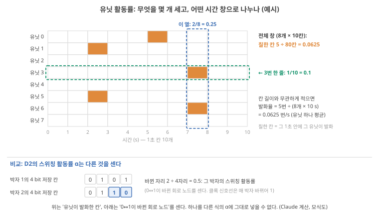
- 유닛 활동률(발화 비율) \(\alpha_{\text{unit}}\). 세는 것: 발화가 있었던 (유닛, 시간 칸)의 수. 나누는 것: 전체 (유닛 × 시간 칸)의 수. 그림 8에서 칠한 칸은 5개, 전체 칸은 8 × 10 = 80개이므로 \(\alpha_{\text{unit}}\) = 5/80 = 0.0625입니다. ★ 세는 창을 바꾸면 값이 바뀝니다. 7–8초 한 열만 보면 2/8 = 0.25, 3번 한 줄만 보면 1/10 = 0.1입니다. 칸 길이도 값을 바꿉니다. 1초 칸을 0.5초 칸으로 나누면 칸이 160개로 늘어 같은 5번의 발화가 5/160이 됩니다. 칸 길이와 무관하게 적으려면 발화율(firing rate, 초당 발화 수)을 씁니다. 5번 ÷ (8개 × 10 s) = 0.0625번/s(유닛 하나 평균)입니다. Claude 계산 그래서 활동률을 말할 때는 "무엇을, 어떤 시간 창과 칸 길이로" 셌는지를 함께 적습니다.
- 스위칭 활동률 \(\alpha\) (Day 3–4). 활동률의 \(\alpha\)는 다른 것을 셉니다. 세는 것: 한 박자 동안 0↔︎1이 실제로 바뀐 트랜지스터·배선의 노드(node, 충방전되는 지점) 수. 나누는 것: 전체 노드 수 × 박자 수. 그림 8(b)처럼 4 bit 저장 칸의 값이 0101에서 0101로 그대로면 그 박자의 활동률은 0, 0110으로 바뀌면 두 자리가 바뀌어 2/4 = 0.5입니다. 박자 신호선 자체는 박자마다 반드시 바뀌므로 1입니다.
- 둘의 관계. 유닛 하나가 한 번 발화해 계산하면 그 안에서 많은 노드가 바뀌지만, 몇 개가 바뀌는지는 회로 설계에 달렸습니다. 그리고 발화하지 않은 유닛도 동기식이면 박자 신호선이 계속 바뀝니다. 그래서 \(\alpha_{\text{unit}}\) = 0.0625를 \(P \approx \alpha C V^2 f\)의 \(\alpha\)에 그대로 넣을 수 없습니다. 'co-location과 사건 구동' 구간에서는 "유닛 활동 한 번에 평균 에너지 \(E_{\text{unit}}\)이 든다"는 모형 가정으로 두 셈을 잇고, 스위칭 활동률은 그 \(E_{\text{unit}}\) 안(과 활동과 무관하게 나가는 바닥 전력 안)에 들어갑니다.
연결. 사건 구동 + 희소성이 합쳐져야 'co-location과 사건 구동' 구간의 전력 절감이 나옵니다. 이온 device 쪽에서 "입력이 희소한가"는 응용이 정합니다. 피부 압력 센서는 대부분의 시간에 "변화 없음"이고, 심전도는 1초에 한 번 큰 사건이 있습니다. 영상 전체를 매 프레임 처리하는 일은 희소하지 않습니다.
기초 6: AER — 발화를 "주소"로 보내기
왜 필요한가. 그림 8의 표에서 발화는 80칸 중 5칸뿐입니다. 이 발화를 다른 칩(받는 쪽)에 알리는 가장 단순한 방법은 유닛마다 전선을 한 가닥씩, 8가닥을 깔아 두는 것입니다. 유닛이 100만 개면 100만 가닥이 필요해 칩 사이에 깔 수 없습니다. 발화는 '했다/안 했다'뿐이고 모양이 같으므로(스파이크의 높이가 거의 같다는 점은 뒤의 '신경망과 스파이크'에서), 받는 쪽이 알아야 할 것은 사실 "누가 지금 발화했나"뿐입니다.
주소(address)부터. 주소는 유닛마다 붙인 고유 번호를 0과 1의 묶음(비트)으로 적은 것입니다. 유닛이 8개면 번호 0–7은 3 bit로 모두 적을 수 있습니다(2³ = 8). 0번 = 000, 3번 = 011, 6번 = 110입니다. 전선 3가닥에 높음/낮음을 올리면 번호 하나가 전달됩니다.
무엇을 볼지. 그림 9는 그림 8의 7.3초 장면, 즉 가스 B가 들어와 3번과 6번이 함께 발화한 순간을 보내는 칩 → 공용 통로 → 받는 칩 순서로 따라갑니다. 동시에 둘이 발화했을 때 무슨 일이 생기는지, 그리고 통로에 무엇이 실리는지 보세요.
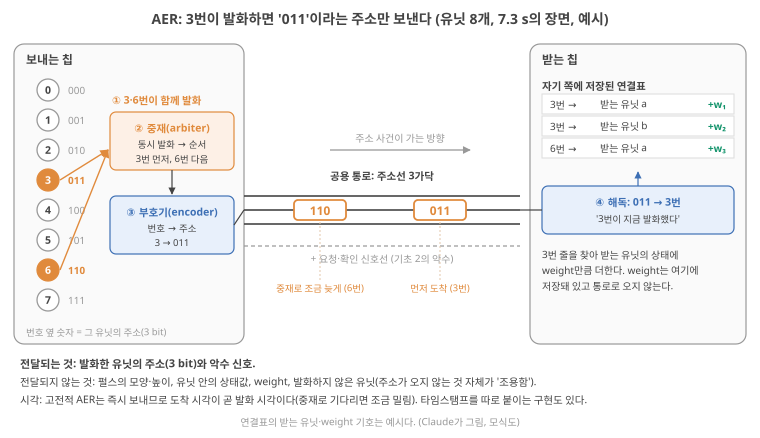
① 발화. 7.3초에 가스 B가 들어와 3번과 6번이 거의 같은 순간에 발화합니다.
② 중재. 통로는 하나라서 두 주소를 동시에 올릴 수 없습니다. 중재 회로(arbiter)가 순서를 정합니다. 여기서는 3번이 먼저, 6번은 잠깐 기다립니다.
③ 주소를 통로에. 부호기(encoder)가 3을 주소 011로 바꿔, 여러 유닛이 함께 쓰는 공용 통로(전선 묶음, 버스(bus): 주소선 3가닥 + '보냈다/받았다' 신호선, 앞의 비동기 회로에서 본 악수)에 올립니다. 이 한 번의 전송이 주소 사건(address event)입니다. 이어서 6번의 110이 올라갑니다.
④ 수신. 받는 쪽은 011을 읽어 "3번이 지금 발화했다"를 알고, 자기 쪽 연결표에서 '3번에서 오는 연결'을 찾아 그 연결의 weight만큼 받는 유닛들의 상태를 바꿉니다(weight는 뒤에서 설명). Weight는 통로로 오지 않고 받는 쪽에 저장돼 있습니다.
이 규약 전체를 주소-사건 표현(address-event representation, AER)이라고 합니다. Kudithipudi는 여러 뉴로모픽 칩이 이런 사건 기반 비동기 통신 규약을 쓰며, 주소가 칩의 입력(주소 사건)이 되어 사건을 받는 뉴런을 나타낸다고 정리합니다. Kudithipudi 2025, p.803 그림 9는 보내는 유닛의 번호를 주소로 적었는데, 칩 사이에서 길을 정하는 단계에서 이 번호를 받는 쪽 번호로 바꿔 적기도 합니다. 어느 번호를 싣는지도 구현마다 다릅니다. 해석
무엇이 전달되고 무엇이 전달되지 않나.
- 전달되는 것: 발화한 유닛의 주소(그리고 악수 신호).
- 전달되지 않는 것: 펄스의 모양·높이, 유닛 안의 상태값(뒤에서 볼 membrane potential 같은 것), weight, 그리고 발화하지 않은 유닛. 주소가 오지 않는다는 사실 자체가 '조용함'이라는 정보입니다.
- 시각: ★ 고전적인 AER 설계는 주소를 일어나는 즉시 보내므로 주소가 도착한 시각이 곧 발화 시각을 나타냅니다. 확인 Boahen 2000 초록으로 확인 중재 때문에 6번처럼 기다린 주소는 실제 발화보다 조금 늦게 도착하므로 시각 정보에 작은 오차가 생깁니다. 해석 주소에 시각 값(타임스탬프, timestamp)을 따로 붙여 보내는 구현도 있고, 시간을 일정한 칸으로 나눠 칸 번호로 다루는 구현도 있어서, 시간이 어떻게 표현되는지는 시스템마다 확인해야 합니다. 미확인 원문 미대조
그다음에야 효율. 그림 8의 10초를 두 방식으로 보내 봅니다. 첫째, 1초 칸마다 8개 유닛의 발화 여부를 1 bit씩 모두 보내면 칸당 8 bit × 10칸 = 80 bit. 둘째, AER로 발화마다 주소 3 bit를 보내면 5번 × 3 bit = 15 bit. 희소하니 AER가 적습니다. 반대로 한 칸에서 8개가 모두 발화하면 AER는 8 × 3 = 24 bit로 칸마다 다 보내는 방식의 8 bit보다 많습니다. ★ 이 작은 배열에서는 한 칸의 발화가 2개 이하(2 × 3 = 6 bit < 8 bit)일 때만 AER가 적고, 3개(9 bit)부터는 많습니다. 악수 신호선과 중재 회로의 비용은 뺀 단순 비교입니다. Claude 계산
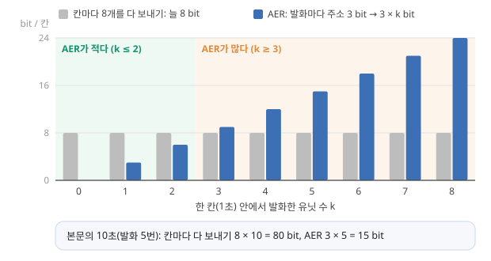
크게 키우면. 뉴런 100만 개의 주소는 20 bit(2²⁰ ≈ 100만)로 적을 수 있습니다. 1초에 1,000개의 스파이크가 있으면 통로로 가는 양은 20,000 bit. 값을 보내는 방식으로 100만 개의 값을 매 단계 보내는 것과 비교하면 자릿수가 다릅니다. 반대로 모든 뉴런이 매 순간 발화하면(희소하지 않으면) 주소 방식이 오히려 더 비쌉니다.
연결. AER는 희소성을 통신량 절감으로 바꾸는 장치입니다. 디지털 규약이므로, 아날로그 device로 만든 센서(Day 1–2의 silicon retina 계열)의 출력도 AER로 내보내 디지털 칩과 잇습니다. 이온 device 배열이 다른 칩과 이야기하려면 결국 이런 규약 중 하나로 변환해야 합니다. 해석
2-3. 유닛 하나 안에서 일어나는 일: 신경망, 스파이크, LIF
기초 7: 인공 신경망(ANN)과 스파이킹 신경망(SNN), 그리고 스파이크
왜 필요한가. 유닛 8개 그림에서는 유닛을 "입력을 받아 상태를 갖고, 조건이 맞으면 발화한다"로만 다뤘습니다. 이제 그 안을 엽니다. "신경망"은 뉴로모픽 논의의 공통 언어인데, 그 안에 "값을 보내는 신경망"과 "펄스를 보내는 신경망"이 있고, 뉴로모픽 칩의 많은 수가 둘째를 겨냥합니다. 둘의 뼈대와 차이를 알아야 리뷰의 SNN·spike·LIF 같은 단어가 읽힙니다.
무엇을 볼지. 그림 11은 두 종류의 유닛을 나란히 그립니다. 지금은 (a) 값을 보내는 유닛만 보세요. (b) 스파이크를 보내는 유닛은 이 상자 뒤쪽에서 스파이크와 LIF를 배운 뒤 다시 봅니다.
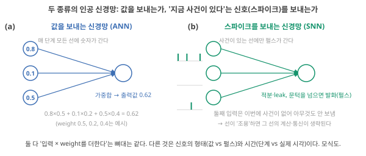
무엇인가 — 값을 보내는 신경망(ANN). 가장 작은 단위는 "입력 숫자 몇 개를 받아, 각각에 weight를 곱해 더하고, 그 합으로 출력 하나를 내는" 유닛입니다. 그림 11(a)처럼 입력이 0.8, 0.1, 0.5이고 weight가 0.5, 0.2, 0.4이면
\[ 0.8 \times 0.5 + 0.1 \times 0.2 + 0.5 \times 0.4 = 0.40 + 0.02 + 0.20 = 0.62 \]
가 출력입니다(보통 이 합에 간단한 비선형 함수, 예를 들어 "0보다 작으면 0으로 자르기"를 한 번 더 씌우지만 뼈대는 이것입니다. Weight의 뜻은 weight). 이런 유닛을 수백·수천 개 층(layer)으로 늘어놓고, 한 층의 출력이 다음 층의 입력이 되게 이은 것이 인공 신경망(artificial neural network, ANN)입니다. "학습"은 정답과 출력이 가까워지도록 weight 숫자들을 조금씩 고치는 일입니다. 여기서 값은 매 단계 모든 선을 타고 갑니다. 입력이 0이어도 "0"이라는 값을 보냅니다.
무엇인가 — 스파이크. 신경세포는 ANN처럼 숫자를 보내지 않습니다. 대신 membrane potential이 잠깐 솟았다 내려오는 짧은 전압 펄스를 띄엄띄엄 냅니다. 이것을 스파이크(spike) 또는 활동 전위(action potential)라고 부르고, 높이는 약 100 mV(약 −70 mV에서 약 +30 mV까지. 정점을 +40 mV로 적는 교재도 있습니다), 폭은 약 1 ms입니다. 확인 (Gerstner 외 2014, 1.1절: 진폭 약 100 mV, 지속 1–2 ms. 약 100 mV는 Aluru도 적는다 Aluru 2026, p.592)
펄스가 어떻게 생기는지 기초: 신경세포의 막(앞의 신경세포 그림 (b))에서 따라갑니다. 새 부품은 하나, 전압 의존 통로(voltage-gated channel)입니다. Membrane potential이 어느 값을 넘으면 열리는 단백질 통로로, Na⁺만 통과시키는 것과 K⁺만 통과시키는 것이 따로 있고, 쉬는 동안에는 닫혀 있습니다. 아래 단계의 번호가 그림 12의 번호와 같습니다.
쉬는 막은 바깥에 Na⁺, 안에 K⁺가 많고 안쪽이 약 −70 mV입니다(앞의 막 그림과 같습니다). Membrane potential을 +30 mV 쪽으로 끌어올리려면 어느 이온이 어느 방향으로 움직여야 할까요? 다시 −70 mV로 끌어내리려면? "양전하가 들어오면 안쪽이 오른다"만 써서 예상해 보세요. 아래 단계 ②·③이 답입니다.
무엇을 볼지. 그림 12(a)의 세로축은 membrane potential(안의 전위 − 밖의 전위, mV), 가로축은 시간(ms)이고, 곡선의 색이 단계 ①–④입니다. (b)의 막 그림 화살표가 각 단계에서 이온이 움직이는 방향입니다. 그림을 먼저 훑고, 아래 단계 보기로 번호를 하나씩 따라가세요.
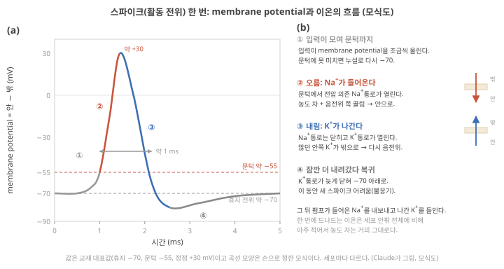
① 입력이 쌓여 문턱까지. 시냅스로 들어온 입력(아래 '시냅스를 어떻게 건너나')이 membrane potential을 −70 mV에서 조금씩 올립니다. 약 −55 mV가 문턱(threshold)입니다. 문턱에 못 미치면 늘 열린 통로로 전하가 빠져나가(leak) membrane potential은 다시 −70 mV로 돌아가고, 펄스는 생기지 않습니다.
② 오름: Na⁺가 들어온다. 문턱을 넘으면 전압 의존 Na⁺ 통로가 열립니다. 바깥에 많던 Na⁺가 안으로 몰려 들어옵니다. 농도 차가 밀고, 음전위인 안쪽이 양이온을 끌어당기기 때문입니다. 양전하가 들어오니 membrane potential이 더 오르고, 그러면 Na⁺ 통로가 더 많이 열립니다. 이 되먹임으로 1 ms도 안 되어 약 +30 mV까지 치솟습니다.
③ 내림: K⁺가 나간다. 정점 근처에서 Na⁺ 통로는 스스로 닫혀 한동안 다시 열리지 않고, 조금 늦게 열린 전압 의존 K⁺ 통로로 안쪽에 많던 K⁺가 밖으로 나갑니다. 양전하가 빠져나가니 membrane potential이 다시 내려갑니다.
④ 잠깐 더 내려갔다가 원래대로. K⁺ 통로가 늦게 닫혀서 membrane potential이 잠시 −70 mV 아래로 내려갔다가 돌아옵니다. Na⁺ 통로가 회복될 때까지는 새 스파이크를 내기 어렵습니다(불응기, refractory period). 한 번에 드나든 이온은 세포 안팎에 있는 전체 양에 비하면 아주 적어 농도 차는 거의 그대로이고, 펌프가 그 작은 차이를 천천히 되돌립니다.
확인 단계와 값(−70, −55, +30 mV, Na⁺ 유입 뒤 K⁺ 유출, 잠깐의 과분극, 불응기)은 OpenStax Anatomy and Physiology 2e 12.4절로 확인. "한 번에 드나드는 이온은 아주 적다"는 생리학 강의 자료(PhysiologyWeb) 수준의 확인
그래서 무엇이 정보인가. 문턱을 넘기만 하면 ②–④가 같은 모양으로 일어나므로, 입력이 셌든 약했든 스파이크의 높이는 거의 같습니다(실무율, all-or-none). 확인 (OpenStax 12.4) 입력이 세면 더 높은 스파이크가 아니라 더 잦은 스파이크가 나오는 것이 보통입니다 강의 자료 수준으로 확인. 그래서 스파이크의 있고 없음, 언제 오느냐, 얼마나 자주 오느냐가 정보입니다. Aluru가 적은 "스파이크로 1 bit를 부호화하는 데 1–100 pJ"의 스파이크가 이것입니다. Aluru 2026, p.592
축삭을 따라 어떻게 가나. 한 지점에서 들어온 Na⁺의 양전하는 막 안쪽을 따라 옆으로 퍼져, 이웃한 막을 문턱 위로 밀어 올립니다. 그러면 이웃에서도 ②–④가 일어나고, 그것이 또 그다음 이웃을 밉니다. 같은 높이의 펄스가 자리마다 새로 만들어지며 축삭 끝까지 가는 것입니다. 방금 스파이크를 낸 자리는 불응기라 펄스가 되돌아가지 않습니다. 확인 (OpenStax 12.4) 도미노와 닮았지만, 도미노는 한 번 쓰러지면 끝이고 막은 수 ms 뒤 다시 펄스를 낼 수 있다는 점이 다릅니다.
시냅스를 어떻게 건너나 (바로 아래 그림의 (c)). 축삭 끝에 스파이크가 도착하면 ① 전압 의존 Ca²⁺ 통로가 열려 칼슘 이온(Ca²⁺)이 말단 안으로 들어오고, ② 그 신호로 신경전달물질(neurotransmitter)이라는 분자를 담은 작은 주머니(소포, vesicle)가 막과 합쳐져 분자를 틈으로 내보냅니다. ③ 분자가 틈을 건너 받는 세포 막의 수용체(receptor)에 붙으면, 수용체 자체가 통로라서 열립니다. ④ 흥분성(excitatory) 시냅스라면 Na⁺ 같은 양이온이 들어와 받는 세포의 membrane potential을 조금 올립니다. 이 작은 변화를 시냅스 후 전위(postsynaptic potential)라고 합니다. ★ 전기 → 화학 → 전기로 신호의 형태가 바뀌어 건너가는 셈입니다. 시냅스 하나가 만드는 변화로는 대개 문턱(휴지보다 15 mV 위)까지 가지 못하고, 여러 시냅스의 입력이 짧은 시간 안에 더해져야 받는 세포가 문턱(앞에서 본 활동전위가 시작되는 전압)을 넘습니다. Membrane potential을 내리는 억제성(inhibitory) 시냅스도 있습니다(예: Cl⁻ 통로를 엶 Aluru 2026, p.592). 확인 (OpenStax Anatomy and Physiology 2e, 12.5절: Ca²⁺ 유입, 소포 방출, 수용체, 흥분성·억제성 시냅스 후 전위, 합산)
Weight는 생물에서 무엇인가. 같은 스파이크가 와도 시냅스마다 받는 세포의 membrane potential을 올리는 정도가 다릅니다. 내보내는 분자의 양, 받는 쪽 수용체의 수 같은 것이 시냅스마다 다르기 때문입니다. 이 "시냅스마다 다른 효과의 크기"가 ANN weight에 해당하는 생물 쪽 양이고(억제성 시냅스는 음의 weight에 해당), 그 크기를 바꾸는 것이 '가소성' 구간의 가소성입니다. '뇌는 20 W' 구간 Aluru의 "화학 시냅스에 저장 2–6 fJ"는 이 세기를 바꿔 정보를 남기는 일의 비용입니다. 해석
무엇인가 — 스파이크를 보내는 신경망(SNN). 유닛이 값 대신 스파이크를 주고받는 신경망입니다. 다만 칩이나 프로그램의 유닛은 위의 생물 뉴런을 통째로 옮기지 않고, 계산에 필요한 뼈대만 남긴 모형을 씁니다. 가장 널리 쓰이는 것이 LIF(leaky integrate-and-fire, leak 적분–발화) 뉴런입니다.
LIF는 막에서 무엇을 남기고 무엇을 버렸나. 막은 이온이 못 지나가는 얇은 층을 사이에 두고 안팎에 전하가 마주 쌓이는 구조라 Day 1의 capacitor와 같고(전하를 더 넣으면 전압이 오름), 늘 열린 통로는 그 전하가 조금씩 빠져나가는 저항과 같습니다. 그래서 막은 저항과 capacitor를 나란히 붙인 RC 회로로 근사되고, 쌓인 전압이 leak으로 줄어드는(감쇠하는) 빠르기를 정하는 시간상수 \(\tau = RC\)는 대표적 신경세포에서 약 10 ms입니다. 확인 (Gerstner 외 2014, 1.3절) LIF는 이 회로에 규칙을 붙인 것입니다.
- 적분(integration): 입력 스파이크가 오면 그 시냅스의 weight만큼 membrane potential을 올린다(capacitor에 전하가 더해짐). 들어온 입력이 상태에 더해져 쌓인다는 뜻이다.
- Leak: 입력이 없으면 막의 저항(늘 열린 통로)으로 전하가 빠져나가, membrane potential이 휴지 전위 쪽으로 지수적으로 감쇠(decay)한다. Leak은 원인(전하가 빠져나감), 감쇠는 그 결과로 값이 줄어드는 모양이다. \(\tau\)만큼 시간이 지나면 올라가 있던 양의 약 37%(e⁻¹)가 남는다.
- 발화와 리셋(firing & reset): membrane potential이 문턱에 닿으면 "지금 스파이크"라는 출력 사건을 연결된 유닛들에 보내고(발화, 유닛 8개 그림에서 말한 그 발화), membrane potential을 정해 둔 값(여기서는 휴지 전위)으로 되돌린다(리셋).
버린 것은 앞 단계 ②–④의 Na⁺·K⁺ 통로가 만드는 펄스의 모양입니다. LIF는 스파이크를 한 순간에 일어나는 사건으로만 다룹니다. 확인 (Gerstner 외 2014, 1.3절) 그래서 "LIF 뉴런을 만들었다"는 말은 생물 뉴런의 이온 메커니즘을 재현했다는 뜻이 아니라, 적분·leak·문턱·발화와 리셋이라는 계산 규칙을 구현했다는 뜻입니다. 해석 이 규칙을 실제 회로로 만드는 방법은 다음 학습의 LIF 뉴런 회로에서 봅니다.
작은 예제: 같은 입력 세 개, 다른 타이밍. 규칙을 숫자로 정합니다(계산을 보기 쉽게 고른 예시 값). 휴지 전위 −70 mV, 문턱 −55 mV이므로 휴지보다 15 mV 오르면 발화합니다. 휴지 위로 올라간 양을 \(u\) [mV]라 하고 1 ms 단위로 계산합니다.
\[ u_{\text{다음}} = 0.9 \times u_{\text{지금}} + 6 \times (\text{그 1 ms 동안 들어온 입력 스파이크 수}) \]
- 적분 항: 스파이크 하나에 +6 mV. 입력 스파이크 하나의 weight를 6 mV로 둡니다. 입력 하나당 값이라 계산 간격과 무관합니다.
- \(u \ge 15\) mV가 되면 발화하고 \(u = 0\)(−70 mV)으로 리셋합니다.
- 0.9는 leak 항, 정확히는 decay factor입니다. 입력이 없을 때 1 ms 뒤의 \(u\)는 지금 \(u\)의 90%가 된다는 뜻, 다시 말해 한 단계마다 지금 값의 10%만큼 줄어든다는 뜻입니다. "1 ms마다 10 mV씩"도, "처음 값의 10%씩 일정하게"도 아닙니다. 10 mV에서 시작하면 10 → 9 → 8.1 → 7.29 mV로, 줄어드는 양이 1, 0.9, 0.81 mV로 점점 작아집니다.
값·계수·leak의 빠르기는 서로 다른 양입니다. \(u\) [mV]는 지금의 상태값이고, 0.9(단위 없음)는 "1 ms씩 끊어 계산한다"는 선택에 딸린 계수이며, 막이 실제로 얼마나 빨리 새는지는 시간상수 \(\tau\) [ms] (= \(RC\), 위 문단)가 정합니다. 셋은 다음 관계로 이어집니다.
\[ 0.9 = e^{-\Delta t/\tau}, \qquad \Delta t = 1\ \text{ms} \;\Rightarrow\; \tau = -\frac{1\ \text{ms}}{\ln 0.9} \approx 9.5\ \text{ms} \]
0.9를 약 9.5번 거듭 곱하면 e⁻¹ ≈ 0.37이 된다는 것과 같은 말입니다. Claude 계산 그래서 계산 간격 Δt를 바꾸면 0.9도 바뀝니다. 같은 막(같은 \(\tau \approx 9.5\) ms)을 0.5 ms씩 계산하면 계수는 \(e^{-0.5/9.49} = 0.9^{0.5} \approx 0.949\), 2 ms씩 계산하면 \(0.9^2 = 0.81\)입니다. 0.9를 그대로 둔 채 Δt만 바꾸면 다른 \(\tau\), 즉 다른 막을 계산하는 셈이 됩니다. 아래 그림 13은 1 ms 사이도 같은 \(\tau\)로 매끄럽게 감쇠하게 그렸으므로, 1 ms 눈금에서의 값은 단계 계산과 같습니다.
입력 스파이크 세 개가 1, 2, 3 ms에 몰려 오는 경우와 1, 6, 11 ms에 흩어져 오는 경우, 어느 쪽에서 발화할까요? Weight를 모두 더하면 둘 다 18 mV로 문턱 15 mV보다 큽니다.
무엇을 볼지. 그림 13의 (a)(b) 두 패널은 입력 수와 weight가 같고 입력 시각만 다릅니다. 곡선이 빨간 점선(문턱)에 닿는지, 입력과 입력 사이에서 곡선이 얼마나 내려가는지를 비교하세요. 아래 단계 보기는 그림에 적힌 숫자를 한 단계씩 계산합니다.
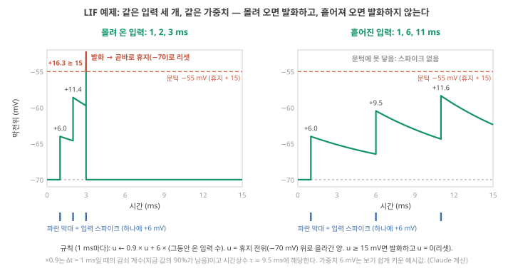
몰린 입력, 1 ms. \(u = 0.9 \times 0 + 6 = 6.0\) mV(membrane potential −64.0 mV). 15 mV 미만이라 발화하지 않습니다.
몰린 입력, 2 ms. \(u = 0.9 \times 6.0 + 6 = 11.4\) mV(−58.6 mV). 1 ms 동안 leak으로 0.6 mV만 줄고 다음 입력이 왔습니다.
몰린 입력, 3 ms. \(u = 0.9 \times 11.4 + 6 = 16.26\) mV ≥ 15 → 스파이크. \(u\)를 0(−70 mV)으로 되돌립니다.
흩어진 입력. 1 ms에 6.0 mV. 다음 입력(6 ms)까지 5 ms 동안 0.9를 다섯 번 곱하면 \(0.9^5 \approx 0.59\)이므로 \(6.0 \times 0.59 = 3.54\), 여기에 6을 더해 9.54 mV. 다시 5 ms 새면 \(9.54 \times 0.59 = 5.64\), 더해서 11 ms에 11.64 mV. 문턱 15 mV에 못 미쳐 스파이크가 없고, 이후 계속 감쇠합니다.
정리. 입력의 수와 weight는 같았는데 언제 왔느냐에 따라 출력이 달라졌습니다. Leak 때문에 LIF는 최근 입력을 더 크게 치고, 시간적으로 몰린 입력에 반응합니다. ANN 유닛(0.62 계산)에는 이런 시간이 없습니다. 이것이 앞 그림의 "시간의 역할이 다르다"는 설명의 뜻이고, 'analog와 시간 동역학' 구간의 시간 동역학이 기대는 성질입니다.
예제의 6 mV는 계산을 보기 쉽게 키운 값입니다. 실제로 시냅스 하나가 만드는 변화는 세포와 시냅스마다 다르고, 대개 여러 입력이 겹쳐야 문턱에 닿습니다(위 '시냅스를 어떻게 건너나'). 실제 뉴런의 문턱도 고정된 한 값이 아닙니다. 해석
바로 아래에 다시 보여 주는 그림의 (b)를 보세요. 스파이크가 없는 선은 조용하므로, SNN은 앞에서 본 사건 구동과 희소성을 자연스럽게 씁니다. (b)의 둘째 입력선은 이번에 사건이 없어 아무것도 보내지 않습니다. 앞의 유닛 8개 그림의 유닛들이 바로 이런 유닛이었습니다. 유닛의 발화가 출력 스파이크이고, 사건 구동은 '스파이크가 올 때만 계산', AER는 그 스파이크의 주소 전달입니다.
작은 숫자로. 입력선 3개 중 1개만 스파이크를 보내면, 값을 보내는 방식의 "3번 곱하고 더하기" 대신 "1번 더하기"만 일어납니다. 입력이 1,000개이고 1%만 활성이면 계산·통신이 100분의 1이 됩니다(대기 전력 제외).
이름. 인공 신경망 ANN, 스파이킹 신경망 SNN, 스파이크, weight, 층, LIF(leak 적분–발화: 적분·leak·문턱·발화와 리셋).
연결. Liang은 물리 reservoir computing(PRC: 재료나 device가 입력에 반응해 시간에 따라 변하는 상태를 계산에 쓰고, 그 상태를 읽어 답을 내는 마지막 층만 학습하는 방식, Day 1–2에서 처음 봄)을 SNN·일반 신경망과 다른 뉴로모픽 접근으로 두고, 계산의 대부분을 물리 영역에서 한다는 점을 차이로 듭니다. Liang 2024, p.194 즉 이온 device가 꼭 SNN의 부품이어야 하는 것은 아닙니다. 그리고 Day 1–2의 "뉴로모픽 = SNN"이 틀린 이유가 여기 있습니다.
2-4. 기억하는 자리에서 계산하기
기초 8: co-location — 기억하는 자리와 계산하는 자리가 같은가
왜 필요한가. Day 3–4에서 본 보통 컴퓨터는 계산하는 부품(연산기)과 값을 기억하는 부품(메모리)이 따로 있고, 값을 멀리서 가져오는 데 계산 자체보다 자릿수로 큰 에너지가 들 수 있다는 것을 봤습니다. 그 이동을 줄이는 가장 직접적인 방법은 기억하는 자리에서 계산하는 것입니다.
무엇인가. 값이 저장된 바로 그 물체가 계산에도 쓰이는 구조입니다. Crossbar(Day 1–2: 가로 전선과 세로 전선이 엇갈리는 점마다 device를 하나씩 둔 격자)에서 교차점 device의 conductance \(G\)(전류가 얼마나 잘 흐르는가, 저항의 역수, 단위 S 지멘스)는 weight를 저장하는 동시에, 전압이 걸리면 \(I = GV\)라는 곱셈을 그 자리에서 해 버립니다. 저장된 값을 어디로 옮기지 않습니다.
작은 숫자로. weight 100만 개를 멀리서 한 번씩 가져오면, weight마다 RAM(칩 밖의 주 메모리) 읽기 한 번(지난 학습의 연산·접근 에너지 비교에서 본 Horowitz 2014 값, 약 1.3 nJ)이 든다고 단순화해 100만 × 1.3 nJ ≈ 1.3 mJ Claude 계산, 그 자리에서 곱하면 가져오는 비용이 0이 되고 변환 비용이 새로 생깁니다. Device에서 나온 전류는 연속량(아날로그)이라, 다음 단계가 디지털이면 그것을 숫자로 바꾸는 회로(ADC)가 필요하기 때문입니다('co-location과 사건 구동' 구간).
이름. co-location(공존, 같은 자리), in-memory computing(메모리 안 계산), compute-in-memory(CIM).
연결. Aluru는 뇌가 "같은 물리 구조 안에서 기억과 연산을 통합해 반복적 데이터 전송의 비효율을 없앤다"고 쓰고, 이것을 디지털 CMOS로도 부분적으로 재현할 수 있는 특징으로 분류합니다. Aluru 2026, p.592 이온 device에서 저장은 conductance(이온 분포)이고, 계산은 그 conductance를 통해 흐르는 전류입니다. 같은 자리입니다.
- 네 축은 독립이다: 표현(디지털/아날로그), 동작 방식(동기/비동기, 클록), 동시 처리(직렬/병렬), 입력 처리(항시/사건 구동). 여러 뉴로모픽 칩이 사건 기반 비동기 통신을 쓰고 Kudithipudi 2025, p.803, Loihi처럼 디지털이면서 비동기 통신을 쓰는 칩이 있다 Roadmap 2026, p.8132, 8135.
- 유닛 = 입력을 받아 상태를 갖고 조건이 맞으면 발화하는 계산 단위 하나(모형 뉴런 하나). 클록은 박자, 사건은 처리할 변화(입력 사건)나 발화(출력 사건)다. 그림 4에서 1초마다 확인하면 10번, 바뀔 때만 알리면 2번 계산하지만 감지 회로의 대기 전력은 남고, 동기식도 클록 게이팅 등으로 일을 줄일 수 있다.
- 희소 분산 부호화 = 적은 수만 켜지되 '어느 유닛들'의 조합이 정보(8개 중 2개 = 28가지, 조합 수는 상한일 뿐). 구조적 희소성은 연결이 적은 것, 활성 희소성은 연결은 있어도 지금 활동이 적은 것 Roadmap 2026, p.8126–8127. 유닛 활동률 = 발화한 칸 ÷ 전체 칸(그림 8: 5/80)이며 세는 창을 함께 적고, Day 3–4의 스위칭 활동률과 섞지 않는다.
- AER = 발화한 유닛의 주소만 공용 통로로(8개면 3 bit, 3번 = 011). 동시 발화는 중재로 순서를 정하고, 시각은 도착 시각 또는 타임스탬프(구현마다). 희소할 때만 이득이다(그림 8의 10초: 15 bit vs 80 bit).
- 스파이크 = 문턱(약 −55 mV)을 넘으면 Na⁺가 들어와 약 +30 mV로 솟고 K⁺가 나가 되돌아오는 약 1 ms·약 100 mV의 펄스. LIF = 적분·leak·문턱·발화와 리셋: 같은 세 입력도 1·2·3 ms에 오면 발화하고(16.26 mV) 1·6·11 ms에 오면 발화하지 않는다(11.64 mV). 0.9는 Δt = 1 ms의 decay factor(\(= e^{-\Delta t/\tau}\), τ ≈ 9.5 ms)라 Δt를 바꾸면 바뀐다. Co-location = 저장된 물체가 계산도 한다.
학습 완료
이 학습 단위를 마쳤으면 눌러 주세요. 쓰기·영상·심화·추가 연습은 필요 없고, 퀴즈 점수와도 따로 기록됩니다. '완료'는 이 단위를 끝냈다는 표시이지 모든 내용을 완벽히 익혔다는 뜻이 아닙니다.